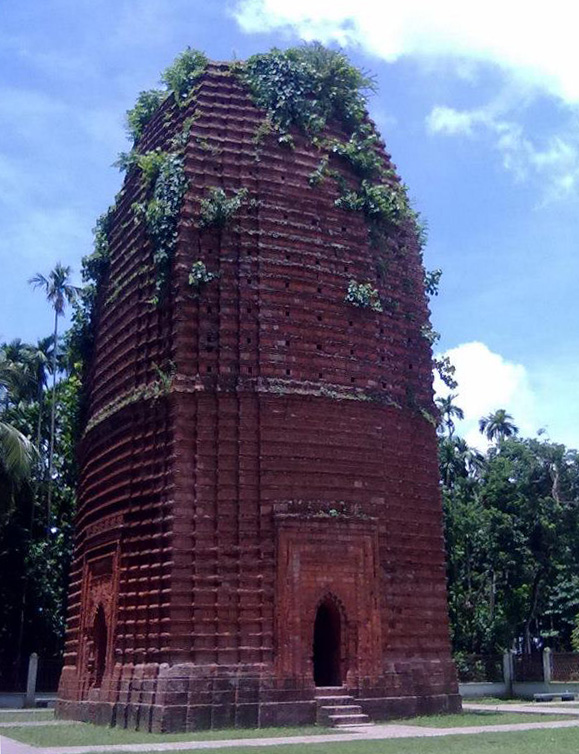

মসজিদের শহর
খান জাহানের সমাধি
কোদলা মঠ
রেজা খোদা মসজিদ
জিন্দা পীর মসজিদ
ঠান্ডা পীর মসজিদ
সিংগাইর মসজিদ
বিবি বেগনী মসজিদ
চুনাখোলা মসজিদ
নয়গম্বুজ মসজিদ
সিংগার মসজিদ
এক গম্বুজ জামে মসজিদ, বাগেরহাট
পীর আলীর সমাধি
মুনিগঞ্জ শিবমন্দির, বাগেরহাট।
শ্রী শ্রী গঞ্জেশ্বরী কালী মন্দির, বাগেরহাট।
রণবিজয়পুর মসজিদ
দশ গম্বুজ মসজিদ
কুটিবাড়ি,জমিদারবাড়ি,মোড়েলগঞ্জ।
বড় আজিনা
ছয় গুম্বজ মসজিদ, বৈটপুর
খান জাহানের নির্মিত প্রাচীন রাস্তা
বড়বাড়িয়া মুন্সীবাড়ি প্রাচীন মসজিদ,চিতলমারী,বাগেরহাট